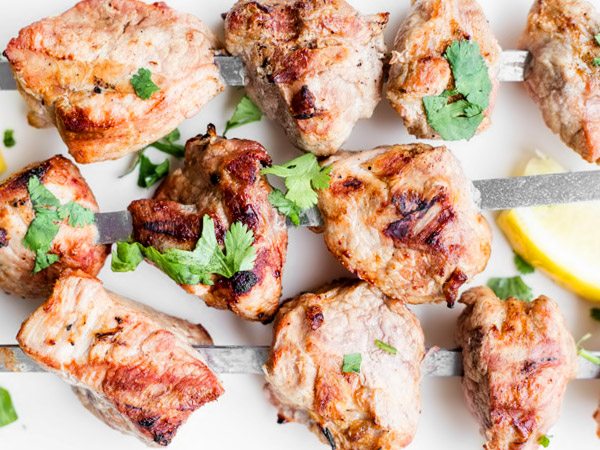

Итак, для того, чтобы начать готовить настоящий и вкусный шашлык, необходимо сначала выбрать подходящее мясо. Какое нужно купить мясо? Кто-то любит только баранину, другие не едят свинину, а третьи употребляют любое мясо. Для хорошего шашлыка отлично подходит свинина, не очень жирная, только свежая и не мороженая. Какую часть свинины брать для лучшего результата? Я не стал бы рисковать другими частями мяса от хрюшки, чтобы потом просто разочароваться. Берите шею, и все тут. Но, и тут же, сделаю одну оговорку. В ней есть такая серединка, без прожилок, слегка розового цвета, которая уходит вдоль позвоночника по обе стороны. Так вот, она тоже не годится для шашлыка. И если она даже и попад.т на шашлык, а это всегда может случиться, то вы е. сразу начнете жевать как грудинку от курицы и без особого, вкусового удовольствия, какие бы вы приправы не использовали. Как и все мясники, тоже буду уверять, что замороженное мясо теряет свои главные, вкусовые свойства. Хотя, что тут говорить, наш брат не может брать что-то не впрок. Бывает, что где-то мясо нашли свежее, а еще и со временем не всегда получается. Поэтому, послушайте хотя бы, один совет: не маринуйте мясо замороженным или ещ. холодным, пусть, сначала оттает до комнатной температуры и стечет вся кровяная вода. Обратите внимание на цвет мяса: если мясо блеклое, подсохшее, значит, оно не свежее и шашлык из него не получится. Вывод: лучше свежее мясо, замороженное, чем не свежее! А правильный вывод сделайте сами!
